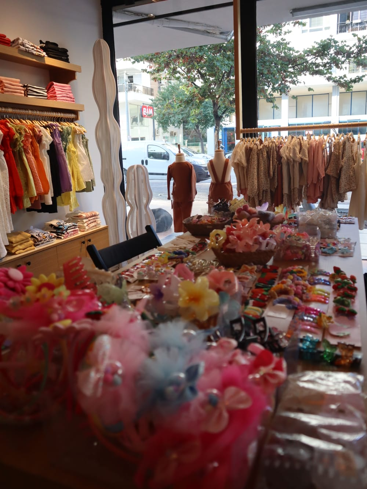
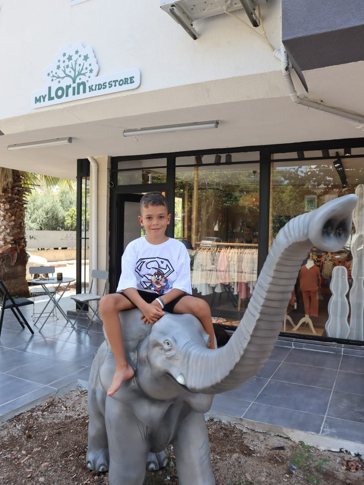
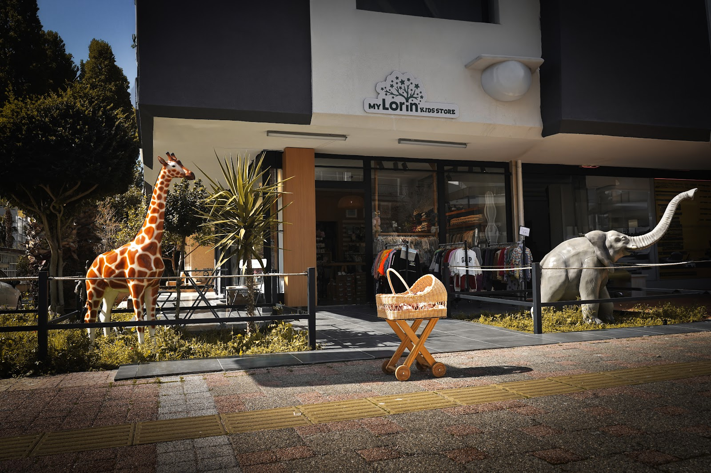
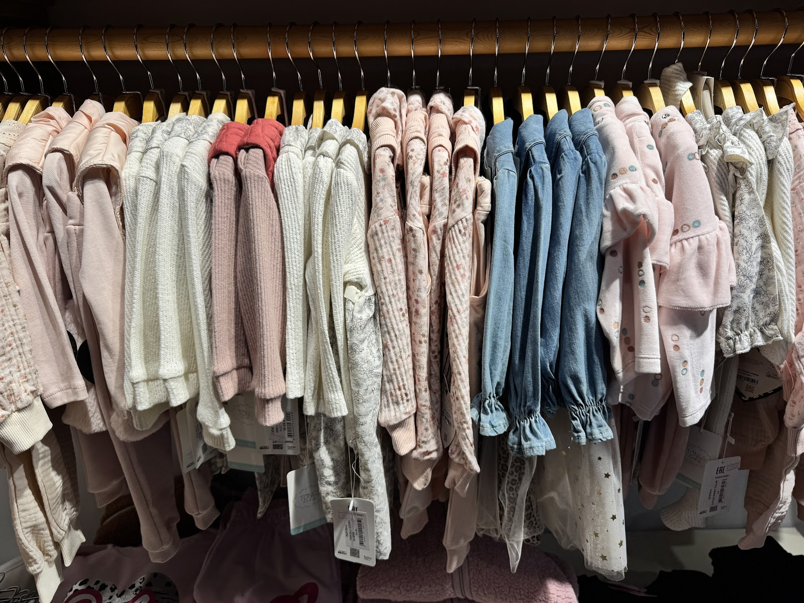

Antalya Konyaaltı'nda, çocuklarınızın hassas ciltlerine uygun, kaliteli ve her yaşa hitap eden zengin bebek ve çocuk giyim koleksiyonumuzla hizmetinizdeyiz.



Yaşı ve kategoriyi seçin, beğendiklerinizi listenize ekleyin; beden ve stok durumunu tek mesajla WhatsApp'tan sorun.
Örnek ürünler. Yayında mağazanın güncel ürünleri ve kendi fotoğrafları gelir.
Çocuk giyimde beden numarası boy (cm) üzerinden gider. Boyu yazın, uygun bedeni görün.
| Beden | Boy (cm) | Yaklaşık yaş |
|---|
Genel kalıp tablosudur; markaya göre değişebilir. Emin olmak için mağazada deneyin.

Mağazamızın önündeki sevimli zürafa ve fil heykelleri çocukların ilgisini çekerken, alışveriş sürecini onlar için eğlenceli bir oyuna dönüştürüyoruz.
Büyük alışveriş merkezlerinin kalabalığından uzak, yerli ve kaliteli butik markaların özel tasarımlarını avantajlı fiyatlarla sunuyoruz.
Mağazamıza adım attığınız andan itibaren sizi ve çocuklarınızı samimi, içten ve her zevke hitap eden bir ilgiyle karşılıyoruz.
Çocuklarınız ve sevdikleriniz için her zaman en yeni, modern ve güncel trendlere uygun tasarımları özenle seçip raflarımızda bulunduruyoruz.
📍 Altınkum, 432. Sk. 11/A, 07070 Konyaaltı/Antalya
🕑 Pzt–Cmt 09:30–20:00 · Paz 09:00–17:00
360° GÖRÜNÜM
Görüntüyü fareyle ya da parmağınızla çevirin; bulunduğumuz sokağı ve girişimizi 360° gezin, gelirken zorlanmayın.
Görüntü: Google Street View · Yol tarifi al